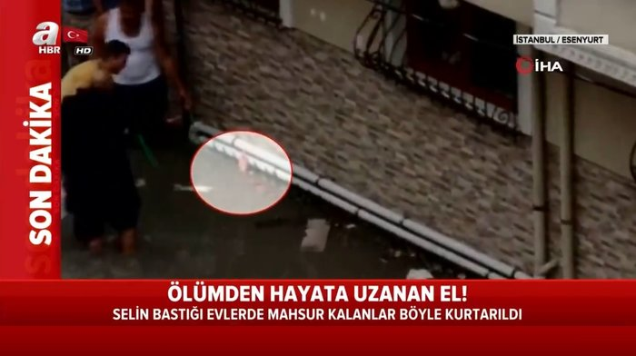

İstanbul Esenyurt'ta etkili olan şiddetli yağmurun ardından dehşete düşüren görüntüler ortaya çıktı.. Su basan bodrum katta mahsur kalan bir kişinin ellerini dışarı çıkararak yardım istediği anlar saniye saniye görüntülendi. Vatandaşlar ise mahsur kalan kişinin nefes alabilmesi için önce su hortumu uzattı daha sonra kovalar ile suyu temizlemeye çalıştı..
Esenyurt'ta öğleden sonra etkili olan sağanak yağış nedeniyle dere taştı. Şiddetli sel sularının ardından Pınar Mahallesi'nde bir sokak üzerinde bulunan birçok evin bodrum katını sel suları bastı. Öte yandan su basanİstanbul'da şiddetli yağış etkili oldu. Vali Ali Yerlikaya selde bir kişinin hayatını kaybettiğini açıkladı. Esenyurt'ta ise dehşet veren görüntü kaydedildi. Bodrum katta sulara gömülen şahıs eliyle yardım istedi. Elini gören vatandaşlar mahsur kalan kişinin yardımına koştu. İşte yürekler ağza getiren o anlara ait görüntüler.... Vatandaşlar ise mahsur kalan kişinin nefes alabilmesi için önce su hortumu uzattı.. Vatandaşlar daha sonra ellerine aldıkları kovalar ile suyu temizlemeye çalıştı. Mahsur kalan vatandaş, vatandaşların yardımı ile kurtarıldı..